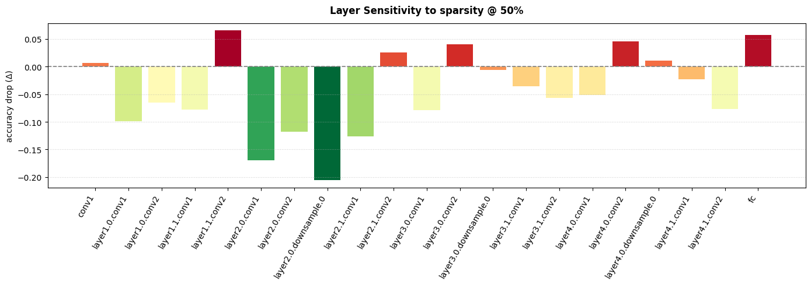

Find which layers are most sensitive to compression
Overview
Not all layers in a neural network respond equally to compression. Some layers are robust and can be heavily compressed with minimal impact, while others are fragile and degrade quickly. Sensitivity analysis helps you identify which layers fall into each category.
This tutorial shows you how to: 1. Analyze layer sensitivity to different compression methods 2. Identify fragile vs robust layers 3. Generate non-uniform per-layer compression targets based on sensitivity
1. Setup
First, we need a model and an evaluation function. The evaluation function takes a model and returns a metric (e.g., accuracy, loss).
# Load a pretrained modelmodel = resnet18(pretrained=True)model.eval()# Create sample inputsample = torch.randn(1, 3, 224, 224)# Define an evaluation function# In practice, this would evaluate on your validation setdef eval_fn(m):"""Simple proxy: measure output magnitude (replace with real accuracy)"""with torch.no_grad(): out = m(sample)return out.abs().mean().item()
/home/nathan/miniconda3/envs/dev/lib/python3.12/site-packages/torchvision/models/_utils.py:208: UserWarning: The parameter 'pretrained' is deprecated since 0.13 and may be removed in the future, please use 'weights' instead.
warnings.warn(
/home/nathan/miniconda3/envs/dev/lib/python3.12/site-packages/torchvision/models/_utils.py:223: UserWarning: Arguments other than a weight enum or `None` for 'weights' are deprecated since 0.13 and may be removed in the future. The current behavior is equivalent to passing `weights=ResNet18_Weights.IMAGENET1K_V1`. You can also use `weights=ResNet18_Weights.DEFAULT` to get the most up-to-date weights.
warnings.warn(msg)
2. Basic Sensitivity Analysis
The simplest way to run sensitivity analysis is with the analyze_sensitivity() function:
result = analyze_sensitivity( model, sample, eval_fn, compression="sparsity", # "sparsity", "pruning", or "quantization" level=50, # 50% sparsity)
# Get the top 3 most robust layers (safe to compress heavily)robust = result.top(3, most_sensitive=False)for layer in robust:print(f"{layer.name}: Δ={layer.delta:.4f}")
A bar chart helps visualize which layers are most sensitive:
result.plot(figsize=(14, 5))

5. Creating Non-Uniform Per-Layer Targets
The key insight from sensitivity analysis is that you shouldn’t compress all layers equally. Use to_layer_targets() to generate non-uniform per-layer compression targets:
targets = result.to_layer_targets( model, target_pct=50, # Target 50% average compression min_pct=10, # No layer below 10% max_pct=80, # No layer above 80% gamma=1.5, # Higher = more differentiation between layers)# Show a few entriesfor name, sparsity inlist(targets.items())[:5]:print(f"{name}: {sparsity}%")
/home/nathan/miniconda3/envs/dev/lib/python3.12/site-packages/torchvision/models/_utils.py:208: UserWarning: The parameter 'pretrained' is deprecated since 0.13 and may be removed in the future, please use 'weights' instead.
warnings.warn(
/home/nathan/miniconda3/envs/dev/lib/python3.12/site-packages/torchvision/models/_utils.py:223: UserWarning: Arguments other than a weight enum or `None` for 'weights' are deprecated since 0.13 and may be removed in the future. The current behavior is equivalent to passing `weights=ResNet18_Weights.IMAGENET1K_V1`. You can also use `weights=ResNet18_Weights.DEFAULT` to get the most up-to-date weights.
warnings.warn(msg)
The to_layer_targets() method generates per-layer compression targets, which works directly with Sparsifier.
For structural pruning with Pruner, the current API uses a uniform ratio across all layers (torch-pruning handles dependency graphs automatically). You can still use sensitivity analysis to: 1. Identify which layers to exclude from pruning (fragile layers) 2. Choose an appropriate global pruning ratio based on the most sensitive layers
from fasterai.prune.allimport Pruner# Use sensitivity to identify layers to EXCLUDE from pruningfragile_layers = [layer.name for layer in result.top(3, most_sensitive=True)]print(f"Fragile layers to protect: {fragile_layers}")# Get the actual module references for ignored_layersmodel = resnet18(pretrained=True)ignored = []for name, module in model.named_modules():if name in fragile_layers: ignored.append(module)# Create Pruner with uniform ratio, but protect fragile layerspruner = Pruner( model, example_inputs=sample, pruning_ratio=30, # Uniform 30% pruning ignored_layers=ignored, # Protect sensitive layers! context='global', criteria=large_final,)pruner.prune_model()pruner.print_sparsity()
Workflow Summary: - Sparsifier: Use to_layer_targets() for per-layer sparsity targets - Pruner: Use top(most_sensitive=True) to identify layers to protect via ignored_layers - Both: Fine-tune after compression to recover accuracy